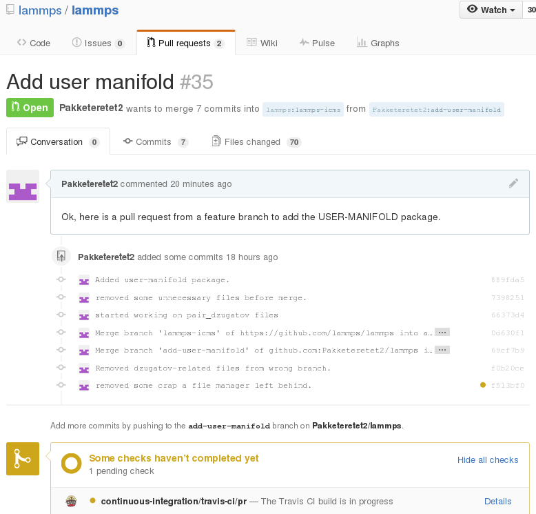

LAMMPS GitHub tutorial¶
written by Stefan Paquay¶
This document briefly describes how to use GitHub to merge changes into LAMMPS using GitHub. It assumes that you are familiar with git. You may want to have a look at the Git book to reacquaint yourself.
Making an account¶
First of all, you need a GitHub account. This is fairly simple, just go to GitHub and create an account by clicking the ``Sign up for GitHub’’ button. Once your account is created, you can sign in by clicking the button in the top left and filling in your username or e-mail address and password.
Forking the repository¶
To get changes into LAMMPS, you need to first fork the repository. At the time of writing, LAMMPS-ICMS is the preferred fork. Go to LAMMPS on GitHub and make sure branch is set to ``lammps-icms’‘, see the figure below.

Now, click on fork in the top right corner:

This will create your own fork of the LAMMPS repository. You can make changes in this fork and later file pull requests to allow the upstream repository to merge changes from your own fork into the one we just forked from. At the same time, you can set things up, so you can include changes from upstream into your repository.
Adding changes to your own fork¶
Before adding changes, it is better to first create a new branch that will contain these changes, a so-called feature branch.
Feature branches¶
Since LAMMPS is such a big project and most user contributions come in small portions, the most ideal workflow for LAMMPS is the so-called ``Feature branch’’ workflow. It is explained in great detail here: feature branch workflow.
The idea is that every new feature for LAMMPS gets its own branch. This way, it is fairly painless to incorporate new features into the upstream repository. I will explain briefly here how to do it. In this feature branch, I will add a USER-package.
I assume that git is installed on the local machine and you know how to use a command line.
First of all, you need to clone your own fork of LAMMPS:
$ git clone https://github.com/<your user name>/lammps.git
You can find the proper url to the right of the “HTTPS” block, see figure.

The above command copies (``clones’‘) the git repository to your local machine. You can use this local clone to make changes and test them without interfering with the repository on github. First, however, it is recommended to make a new branch for a particular feature you would like added to LAMMPS. In this example, I will try adding a new USER-package called USER-MANIFOLD.
To create a new branch, run the following git command in your repository:
$ git checkout -b add-user-manifold
The name of this new branch is “add-user-manifold” in my case. Just name it after something that resembles the feature you want added to LAMMPS.
Now that you’ve changed branches, you can edit the files as you see fit, add new files, and commit as much as you would like. Just remember that if halfway you decide to add another, unrelated feature, you should switch branches!
After everything is done, add the files to the branch and commit them:
$ git add src/USER-MANIFOLD examples/USER/manifold/
$ git add doc/fix_nv*t,e*_manifold_rattle.txt
$ git add doc/fix_manifoldforce.txt doc/user_manifolds.txt
After the files are added, the change should be comitted:
$ git commit -m 'Added user-manifold package'
The “-m” switch is used to add a message to the commit. Use this to indicate what type of change was commited.
“Do not use “git commit -a”. the -a flag will automatically include *all modified or new files. mercurial does that and it find it hugely annoying and often leading to accidental commits of files you don’t want. use git add, git rm, git mv for adding, removing, renaming and then git commit to finalize the commit. personally, i find it very convenient to use the bundled gui for commits, i.e. git gui. typically, i will do git add and other operations, but then verify and review them with git gui. git gui also allows to do line-by-line unstaging and other convenient operations.”*
After the commit, the changes can be pushed to the same branch on GitHub:
$ git push
Git will ask you for your user name and password on GitHub if you have not configured anything. If you correctly type your user name and password, the change should be added to your fork on GitHub.
If you want to make really sure you push to the right repository (which is good practice), you can provide it explicitly:
$ git push origin
or using an explicit URL:
$ git push git@github.com:Pakketeretet2/lammps.git
After that, you can file a new pull request based on this branch. GitHub will now look like this:

Make sure that the current branch is set to the correct one, which, in this case, is “add-user-manifold”. Now click “New pull request”. If done correctly, the only changes you will see are those that were made on this branch, so in my case, I will see nothing related to $mathrm*pair_dzugatov*.$
This will open up a new window that lists changes made to the repository. If you are just adding new files, there is not much to do, but I suppose merge conflicts are to be resolved here if there are changes in existing files. If all changes can automatically be merged, green text at the top will say so and you can click the “Create pull request” button, see image.

After this you have to specify a short title and a comment with details about your pull request. I guess here you write what your modifications do and why they should be incorporated upstream. After that, click the “Create pull request” button, see image below.

Now just write some nice comments, click “Comment”, and that is it. It is now up to the maintainer(s) of the upstream repository to incorporate the changes into the repository and to close the pull request.
Additional changes¶
Before the pull request is accepted, any additional changes you push into your repository will automatically become part of the pull request.
After a merge¶
When everything is fine the feature branch is merged into the LAMMPS repositories:

Now one question remains: What to do with the feature branch that got merged into upstream?
It is in principle safe to delete them from your own fork. This helps keep it a bit more tidy. Note that you first have to switch to another branch!
$ git checkout lammps-icms
$ git pull lammps-icms
$ git branch -d add-user-manifold
If you do not pull first, it is not really a problem but git will warn you at the next statement that you are deleting a local branch that was not yet fully merged into HEAD. This is because git does not yet know your branch just got merged into lammps-icms upstream. If you first delete and then pull, everything should still be fine.
Finally, if you delete the branch locally, you might want to push this to your remote(s) as well:
$ git push origin :add-user-manifold